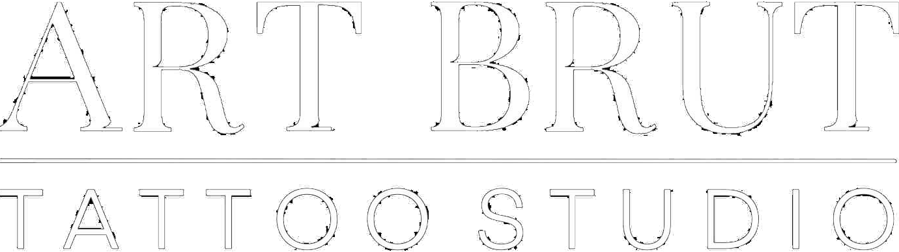
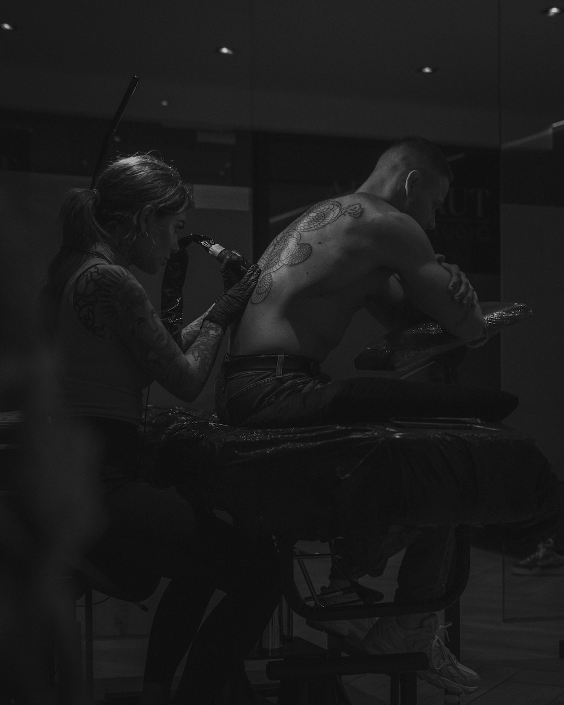
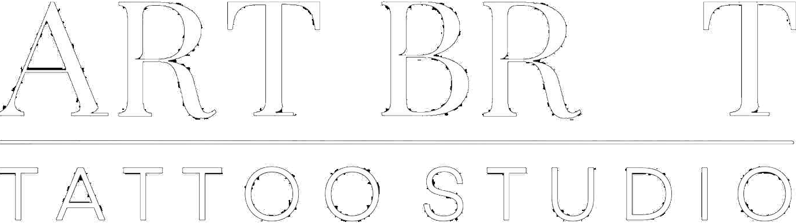
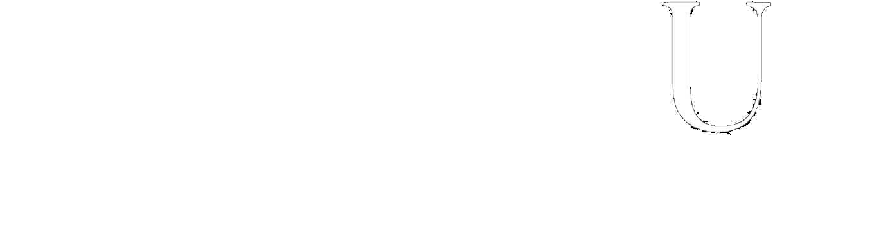
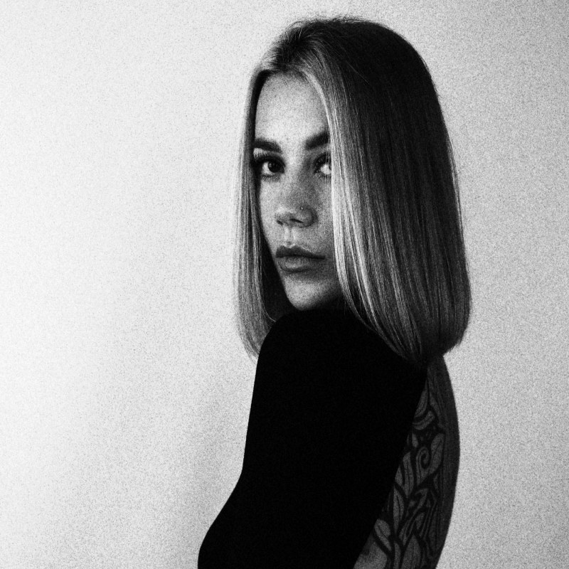
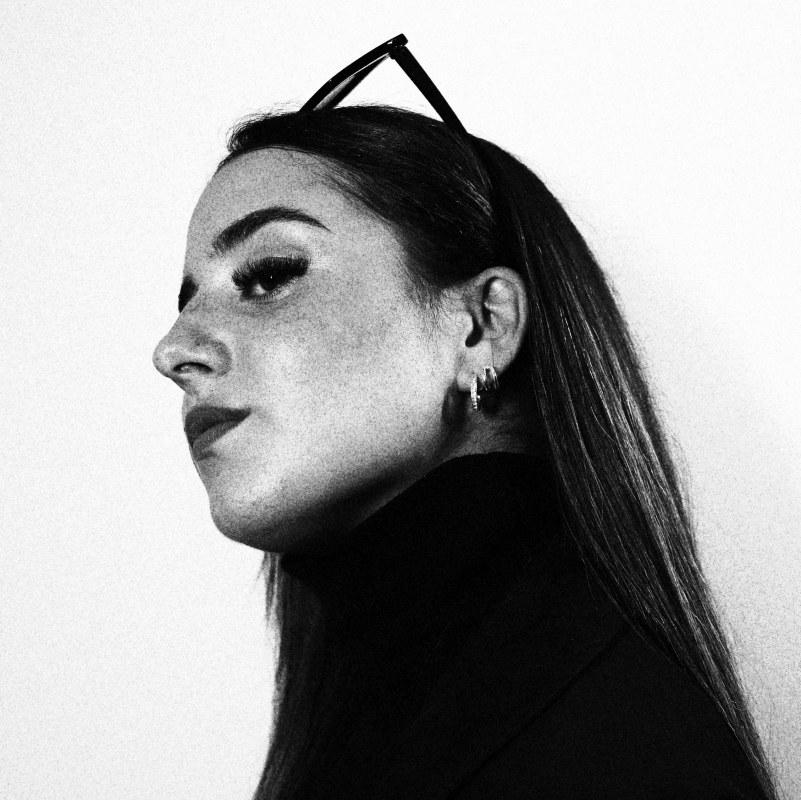
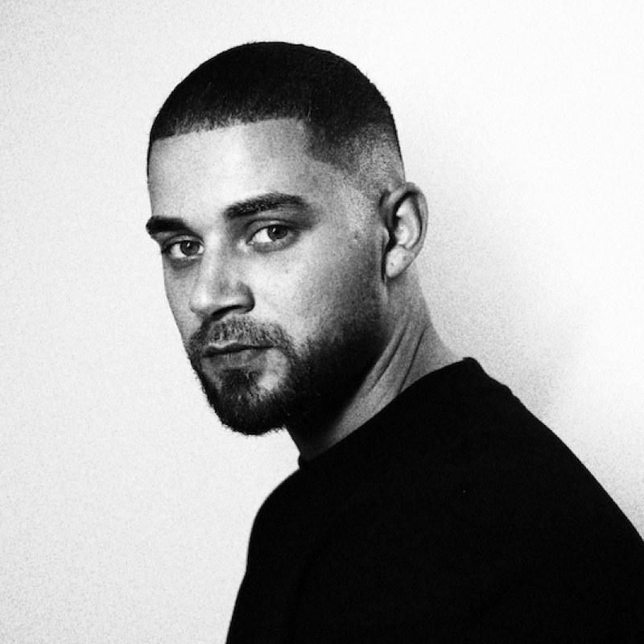
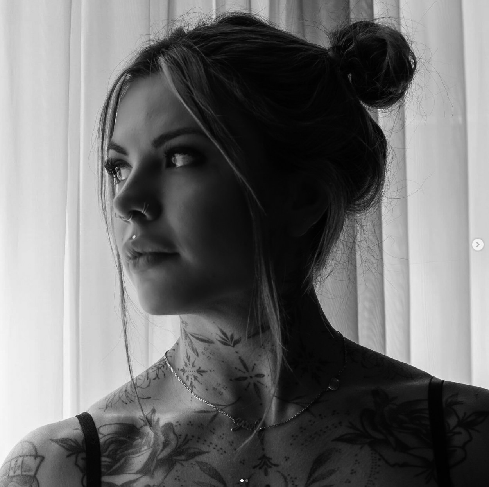
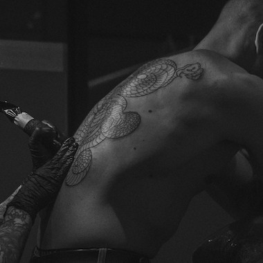

01RealismeFoto van eigen werk volgt


Tattoo studio · Stationsstraat 72, Lanaken (BE) · enkel op afspraak
Sinds 2018


Vier artiesten, vier handschriften. De beste tattoo is er een die jouw statement perfect belichaamt — daarom tekenen we mee, denken we mee en gaat de naald pas op de huid als het ontwerp klopt.
01 — Sinds 2018 aan de Stationsstraat
De beste tattoo is er een die jouw statement perfect belichaamt.
Art Brut is in 2018 geopend door Fleur de Vries aan de Stationsstraat 72 in Lanaken. Vandaag werken er vier artiesten, elk met een eigen handschrift: van realisme en black & grey tot fineline, dotwork en ornamental.
Wij tekenen mee en denken mee. De naald gaat pas op je huid als het ontwerp klopt. Dat kost tijd — dat is precies de bedoeling. Werken kan enkel op afspraak.
02 — Vier handschriften

Artist, eigenaar
Realisme · black & grey · freehand
@fleur_dvrs
Artist
Black & grey · lettering · micro-realisme · surrealisme · fineline

Artist
Dikkere lijnen · simpele shading · fineline · peppershading
@lensonnable
Artist
Fineline · ornamental · dotwork · floral & mandala · blackwork
@yael.sherah.tattoo03 — Zeven stijlen





04 — Van idee naar afspraak
Beschrijf je idee, de plaatsing, de maximale grootte en of je black & grey of kleur wil. Voorbeelden mogen erbij.
Noem de artiest van je voorkeur en geef aan of een leerling-tatoeëerder ook mag.
Je afspraak staat vast zodra het voorschot binnen is. Verplaatsen kan eenmalig kosteloos tot 72 uur van tevoren.
Stationsstraat 72, Lanaken. Enkel op afspraak.
05 — Uit de Google reviews
Er is in mijn ogen geen betere tattoo artieste te vinden. Begrijpt heel goed wat je wilt, denkt enorm mee en is super getalenteerd.
De studio was heel schoon en professioneel, wat meteen vertrouwen gaf.
Kom al ongeveer 10 jaar bij Fleur, vertrouw haar als geen ander! Ze heeft echt talent voor tekenen en tattoo's zetten.